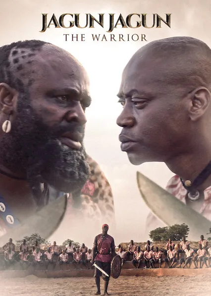

Produced by Femi Adebayo, Jagun Jagun tells the story of a warlord, Ogunjimi, feared by the people within and outside his community. However, the arrival of a young man reveals his insecurities, as he fears that his authority may soon be displaced.
The trailer and teaser materials for Jagun Jagun were enough to spark national raves and anticipation among viewers. The two-minute trailer promised viewers an epic action experience that would keep them on the edges of their seats. Judging by the film’s number one position on Netflix Nigeria’s trending list and its 4th position on Netflix UK’s trending list, it’s safe to say that it delivers to a certain extent.
Jagun Jagun lays a precedent for what Nollywood producers should consider if they decide to produce an epic film. The Tope Adebayo and Adebayo Tijani co-directed film takes the execution of stunts, production designs, and acting performances to a whole new level, immersing viewers in a fictional world where they most likely don’t want to leave after two hours and fourteen minutes.
After many training sessions, Gbotija is sent out to fight in a war. Things go south as the warriors on the battlefield are primarily young and inexperienced. Angered by the decision of the group leaders to hide away while the war was being waged, Ogunjimi sends out a spiritual assassin, Agemo, and punishes the absent officials by depriving them of food and freedom.
Another warrior, Wehinwo (Adeoye Adeyemi Elesho), goes against Ogunjimi’s command and gives food to the officials, leading to his death. News of his demise reaches home, infuriating his fiancee, who consults with a herbalist to kill Ogunjimi’s wife (Fathia Balogun).
Fortunately, Gbotija saves her, thus earning respect among other group members. Gbotija’s popularity soon reaches the ears of Ogunjimi, who becomes jealous and decides to kill two birds with one stone. After a high-ranking officer, Gbogunmi (Ibrahim Yekini Itele), in his group rejects his command, he proposes that Gbotija fights to the death with Gboogunmi. Gbotija later experiences a bitter win.
With the promise of a promotion, Gbotija undergoes several challenges. On his final challenge, he realises that he’s being played. It leads to a confrontation with Ogunjimi, where only one can come out alive.
Jagun Jagun boasts a good script. One can quickly tell that several thoughts, editing, and reviews went into the scripting as every event and scene contributed to the film’s endgame. It was refreshing to watch a movie mostly void of irrelevant scenes that would leave viewers wondering, “What was that for?” The twists and turns were another favourite part of the script, as many were unpredictable. Even when it was obvious that Gbotimi would eventually betray Ogunjimi, viewers were in the dark about how such an event would happen.
Firstly, the editing and visual effects. Although, understandably, the Nigerian film industry is slowly incorporating special effects into movies, the use of a few in Jagun Jagun comes off as undone. A good example is the first scene where Ogunjim chops off a man’s hand; one could quickly tell that it was fake as there was a disparity between the hand and background.
In terms of editing, the texts come under fire. Many transitions felt seamless, while a few appeared as cut and join. Secondly, what happened to Ogunjimi? Characters kept referring to Ogunjimi as a fearsome and ruthless warlord, but viewers were stripped of the opportunity to witness his fury until the end. It would have been great to watch Ogunjimi fight in wars, punishing his enemies ruthlessly.
Watch it. Even though Jagun Jagun bears similarities to films like King of Thieves and Orisa, it raises the bar for Nigerian epic movies. Jagun Jagun is streaming on Netflix